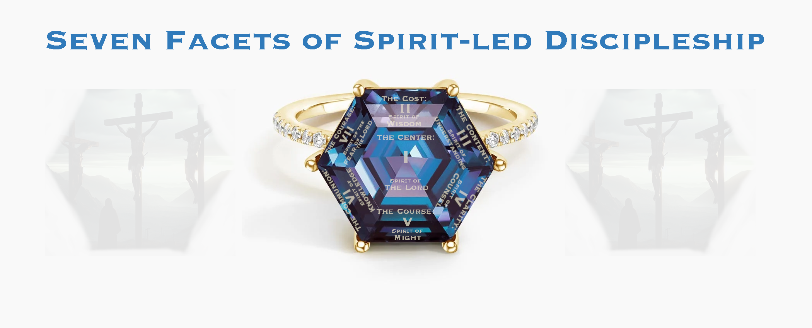
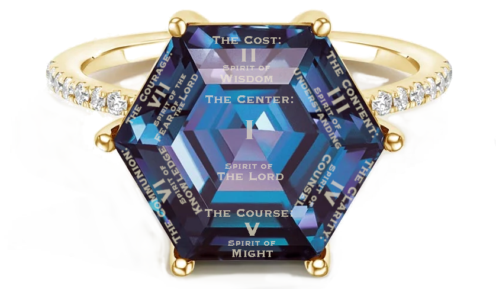

Seven Facets of Spirit-led Discipleship
8435 words long.
Published on 2024-09-07

Synopsis
Each of the seven spirits of God named in Revelation and listed in Isaiah 11 has a role to play in the discipleship of believers. This article offers insight into how to advance in your faith despite the high cost. It offers hope by giving growth milestones that you can use to chart your progress and know if you are on the right track. Some of the ideas are drawn from the Sermon on the Mount of Matthew 5-7. That section of Matthew is shown to coarsely follow the Growth Pattern of Solomon. This means that the core of any discipleship program must be drawn from Jesus' words in that sermon.
God willing, the ideas in this essay will be expanded into an entire book in 2025, tentatively titled The Course of Discipleship.
What of the Holy Spirit?
The disciple of Jesus Christ has been taught the words that Jesus taught and can teach them to others. The disciple of Jesus Christ has imitated the works that Jesus did and can model them for others. Right there you have more than enough to occupy you. You have doctrine, systematics, ecclesiology, ethics, apologetics, hermeneutics, missiology, and dozens more topics about the ideas of Christianity. You have disciplines of action like prayer, fasting, charity, and meditation. By reference to the economic Trinity, that accounts for the ministries of the Son (the words and ideas of the intellectual world) and the Father (the works of the hands in the physical world). What of the Holy Spirit?
Discovering the Seven Facets
When I was a kid, they had puzzle books at the grocery checkout. One kind that I loved had number sequences with placeholders for the missing numbers. You had to figure out the rule for the sequence so that you could fill in the missing numbers. The Holy Spirit speaks to me like that. The Spirit puts several ideas before my mind and places the conviction in my heart that there is a pattern to complete. Then I dive into Scripture, pray, scour the Internet, make spreadsheets and diagrams and meditate. If I get stuck, I pray for help and a clue comes to me to get me unstuck. In the end I have a collection of ideas and the rule that defines their commonality. Always, I have learned something new. It was there in the Bible all along but I had never spotted it before.
What I just described happened to me twice this year. In the spring, I was lying on my couch one night, unable to sleep due to illness. To push aside the headache and the wheezing cough, I called to mind favorite Bible verses from Paul’s letters. As I meditated, I had the sensation that four of the verses belonged to a sequence and formed a larger thought. The sequence resembled a fragment of a seven-part pattern I had found in Ecclesiastes 3 a few years ago. Could it be? The next morning, after I awoke I excitedly read from Romans to Colossians, taking notes. A few hours of this confirmed the pattern that came to me on my sickbed. Paul’s first seven letters are arranged to disciple a believer from the basics of the faith in Romans to complete maturity in Colossians, with all the intermediate steps given in the letters in between. They constitute the course of discipleship. This hearing from God while laying sick abed is as Elihu said in Job:
He delivers the afflicted by their affliction
and opens their ear by adversity.
- Job 36:15
Those are not empty words to lend false comfort the afflicted. Nor do they indicate a proportional response by God. The human expectation is this:
- I make a mistake.
- God sends trouble.
- The purpose of the trouble is to warn me away from the path of sin.
- This opens my ears so that I can hear God’s displeasure and guidance.
- I change my behavior.
- My relationship with God is mended.
That was the expectation shared by Job’s friends and it is false. First, there is affliction that is not because we sinned but it still opens our ears to a message from God. Second, even the affliction that is sent to turn us away from sin results in more than just chastising us. God pours out wisdom beyond what is sufficient to correct us. His love goes above merely tracking our obedience. That is abundant love. That is grace. If our theories of discipleship do not allow for grace, they must be set aside.
My second experience related to understanding discipleship came in August. I was wrestling with how to fit this one piece - this “course of discipleship” - into the whole of the world of discipleship. One by one, I settled on other dimensions of the problem. The difficulty of the task got me thinking about the hardest problems I have faced in my Christian walk. Those inevitably proved to be the times when I needed the Holy Spirit the most. From each spirit-led breakthrough I plucked another aspect of the Spirit’s discipling of me. Are my experiences comprehensive? Do they touch on every facet of the Spirit’s ministry? Knowing myself and how the work of sanctification is not complete, I very much doubt it. That is why this article will name seven facets. If there are more, I hope to see them as well before I die.
Why stop at seven? I suspected the presence of another pattern, the Seven Spirits of God named in Isaiah 11:2. After I matched the four or five facets I had found to their proper spirit, I considered the remaining spirits and found facets to match them, completing this pattern. Hooray! Another supermarket number sequence successfully filled in.
So what? The guidance of the Holy Spirit is not like the guidance given by the Father and Son. To dissect and categorize it requires tools and perceptions that do not come easily to us. Flaws of heart darken and muffle the teachings of the Word. God could double the length of the Bible to elaborate these things, but what good are more words if we are deaf and blind? That is why the Spirit employs other channels of communication to reach us, like suffering. Those channels are necessary so that the words finally make sense.
The Seven Facets Listed

The seven facets are deceptively simple.
- The Center: Put Jesus Christ at the center of your discipleship.
- The Cost: That cost is high and it is not what most people think.
- The Content: Let the Gospel grow like a seed, not all at once.
- The Clarity: Recognize the heavenly treasures with unstopped ears and open eyes.
- The Course: Scan for milestones of faith to measure your spiritual progress.
- The Communion: Find your place in the Church.
- The Courage: Prove your loyalty.
What is deceptive? When I see these things, my attention immediately leaps to the thing indicated, not the agent doing the pointing. I see Christ, but I forget the Holy Spirit that causes me to yearn to see him. I recall sacrifices I have made, but forget the condition of my heart as that offering left my hand, whether begrudging or gracious. I ponder marvelous truths, but forget the long years of ignorance, doubt and confusion from which those convictions grew. I would have none of these things without that one guiding Spirit. That is the Spirit’s role in discipleship.
Consider the third facet (the Content). It contains the bulk of what a typical syllabus on discipleship would cover, the intellectual content. Then consider the second facet (the Cost), which seemingly speaks of sacrifice and other spiritual disciplines, the physical content. Those assumptions miss what it is for a facet to be spirit-led. It is not about ideas or actions but how the heart either embraces or refrains from embracing them. Before diving into each in turn, let’s consider how we struggle with the Cost, Content and Clarity and what that can teach us.
The Economics of Service
Jesus did not sugarcoat his message. He asked one man to sell his possessions and give to the poor. He warned of persecution and hardship. He preached and practiced love for his enemies. For whoever would save his life will lose it, but whoever loses his life for my sake will save it. (Luke 9:24, ESV) Dietrich Bonhoeffer set down his estimate in The Cost of Discipleship. I tried to put his words into practice and failed. That seems to be the point. Nobody can advance to the next stage if they are unwilling to try and fail.
Value. When we fail, what is the Holy Spirit showing us? He is showing us what we value. We do not want to surrender the things we prize. Whether money, property, social position, power, prestige or baser desires, we limit how much we are willing to part with.
Does the Lord want those things? No. Then why does he ask us to give them up? It is because what he wants us to give up is not the objects we value but our whole value system!
Catalog. If there are heavenly treasures whose value exceeds that of the material baubles we hoard, what are they? Jesus told us to lay up such treasures in Matthew 6, but where is the list? Is it in the Bible? Show me!
Remember the last time you flipped through a catalog? Every page had a lavish image photographed by an expert. So much variety in styling, color and price. Most of the pages show things you don’t want and can’t use but it will strike the fancy of somebody out there and they will place an order. The same is true of the Bible. It has all those treasures, real treasures, but you are not trained to recognize the craftsmanship. You can’t spot the $400 designer coat on the $20 rack at Saver’s. The words in God’s catalog make no difference because it does not touch your fancy, the desires of your heart.
Jesus called the Gospel a seed. It has to grow. The treasures are not recognized all at once. We must slowly change inside so that we can recognize them and someday place on them the same value that Jesus does.
Revaluation. How do we achieve clarity? How are our ears unstopped and eyes opened? This is a great mystery. It seems impossible. How many years did I lament being unable to pay the cost! I saw no way around it. No liquidation sale. The cost of discipleship never went down. Then after many changes, I saw God’s plan. Only recently did I grasp the divine solution. Once your value system changes, the things you give up become worth less to you than the things you receive in exchange. Even without the sticker price changing, the cost of discipleship goes down, way down.
How did I discover a heavenly treasure? How did my value system change so that I now value it more than most other things? What did I do? How did I know to do it?
Searching for Heavenly Treasures
John Newton said it best. "Twas grace that taught my heart to fear and grace my fears relieved.” That grace was the gospel. By the Holy Spirit it told me about the heavenly treasures, guided me to them, then caused me to treasure them before changing my behavior to exchange my perishable goods for eternal ones.
Here is how it went. Through several influences (Bonhoeffer, a friend, my pride, and other things) I was prompted to memorize the Sermon on the Mount. I acquired many words but little meaning. The first result was that the Golden Rule became precious to me. I already knew that living by that rule exacts a steep cost, but praise the goodness of God! I found the blessing of the preceding words. Ask. Seek. Knock. We are promised that the Father gives good gifts to His children. By faith we can rely on God to resupply us. We give to our neighbor confident that God will give us our daily bread. Though I did not see the cost of discipleship go down, I saw my supply go up.
Alas, that was not enough. Yet the seeds planted from me memorizing Matthew 5-7 began to sprout. Jesus’ admonition to lay up treasures in heaven grabbed my attention. What are those treasures? Jesus didn’t say! I would devote huge chunks of time over the next two decades searching for their identity. Skipping the middle, here is how my search for treasure began and ended.
Near as I can remember, in mid-1991 I received some money. I didn’t know the best use for it so I prayed. In my prayer I numbered the amount of money. Days later, I went to a prayer meeting. One woman at the meeting asked God to provide money for a Christian ministry that she supported. They had an urgent need. The amount of their need matched the amount in my prayer to the penny. As directed by the Lord, I made a donation to that ministry for the full amount.
In the Bible, people like Hannah who offered great sacrifices to the Lord often included a petition. Two things can be said of my sacrifice. First, it was the largest gift to charity that I had ever made. Second, it was hard to write that check. My reluctance laid the condition of my heart bare. That is why I petitioned God as I did. I prayed, “Lord, give me a generous heart.”
The Lord has not disappointed me. Not only has he helped me address the greed in my heart, but by this He gave me the first treasure for my list and how we can obtain it. When we give perishable, material goods to the needy, our coins of gold and silver are transformed into coins of goodness.
For two more decades I continued my search. Then I drew up a list. The last treasure to make my list was the glory of God.
How is making a list helpful? How is it spiritual? The answer is found in what the list did to me. It was like and unlike my experience with giving away money. I looked into my heart and knew with great clarity that I did not value the glory of God as highly as Moses (Exodus 33:18) or C.S. Lewis (as recounted in “The Weight of Glory”). I knew this but unlike the direction I received to give to charity decades earlier, this time I didn’t know how to fix it. How do you force yourself to want something more if you have never seen it?
That was when I did something new. I did something I was not in the habit of doing. I did exactly the right thing without knowing why. I did the very thing that the Gospel teaches you to do in that situation. I began to fast. Every Monday for the next three years, I fasted and prayed the same simple prayer, copied from Moses: “Lord, show me your glory.”
The end result was that God showed me His glory by unstopping my ears and opening my eyes so that I could better understand the Bible. The end result was that the Glory of God became exceedingly precious to me. That is the Clarity facet.
Only days ago did I learn why I decided to fast and why it was the appropriate thing to do. One of the greatest spiritual challenges I have faced is anxiety. Anxiety took decades longer to overcome than depression, the fear of death or several other maladies. The teaching on anxiety is in Matthew 6. It includes the words about heavenly treasures. Immediately before the teaching on anxiety is advice on fasting. Now it clicks. We must fast to overcome powerful spiritual forces that oppress us, like demons and idols in our hearts. The materialistic priorities that have us putting food, shelter, clothing and money ahead of the glory of God are such strongholds. By fasting, we can topple those strongholds and enable the Holy Spirit to build a grand edifice in its place.
The Content facet is the Gospel that grows. Because I memorized the Sermon on the Mount decades ago, the impulse to fast so that I could get unstuck was buried deep in my soul. When I began that fast, I was being led by the Holy Spirit and I didn’t even know it! The seed was growing. A decade later I finally understand in my mind what I long ago knew in my heart.
Cost. Content. Clarity. The Spirit guided me by showing me the cost, then my poverty, then the Lord’s generosity, then that treasure which I am prepared to sell everything to purchase. All that goes on in my heart where the Holy Spirit is busily at work. It is not the Gospel, it it the shaping of a place fit to house the Gospel. That is how these facets sound like one thing - a bunch of religious ideas - but are another thing entirely.
Now it is time to back up to the first facet and look at all of them in succession. Each facet reflects one aspect of the Holy Spirit’s ministry. The scope and shape and sequence of that ministry is revealed in Revelation and Isaiah:
And between the throne and the four living creatures
and among the elders I saw a Lamb standing,
as though it had been slain, with seven horns
and with seven eyes, which are the seven spirits of God
sent out into all the earth.
- Revelation 5:6, ESV
and
There shall come forth a shoot from the stump of Jesse,
and a branch from his roots shall bear fruit.
And the Spirit of the Lord shall rest upon him,
the Spirit of wisdom
and understanding,
the Spirit of counsel
and might,
the Spirit of knowledge
and the fear of the Lord.
- Isaiah 11:1-2, ESV
Facet One: The Center
Spirit: The Spirit of the Lord
Book: Psalms, The Ten Commandments
Goal: To love a person you cannot see and set a course for an unknown place you’re not sure you want to go
The first spirit of the seven, called the Spirit of the Lord, is the spirit of lordship. It is the spirit that carries faith into our soul and keeps it there. By this spirit we fulfill the words of Peter:
But in your hearts revere Christ as Lord.
Always be prepared to give an answer to everyone
who asks you to give the reason for the hope that you have.
But do this with gentleness and respect…
- 1 Peter 3:15, NIV
The wellspring of true evangelism is the heart that sanctifies, reveres and sets apart Christ as the center of their life. A few years after I became a believer, a friend at church named Carol Ann said, “You are in love with Jesus.” Her tone suggested that she considered this a rare thing. I said, “Lots of people love Jesus.” She then made it clear that there is a difference between the two. Knowing that makes the sense of these words of Revelation plain: But I have this against you, that you have abandoned the love you had at first. (Revelation 2:4, ESV) Like the Ephesian church, we easily vacillate between the two loves.
What connects the Book of Psalms to this spirit? It is the Bible’s main book about dealing with the emotions, passions, and desires of the human heart. In my NIV Bible concordance the word for Lord appears 717 times in the Psalms, the most of any book. The Lord is shown in the roles of shepherd, savior, rock, deliverer and many others. What is more, Jesus quoted or referenced the Psalms often. Depending on your source and what they define as a quotation versus a reference, Psalms is the book Jesus cites either the most or second most frequently. What’s more, Jesus quotes it while hanging on the cross.
Maintaining faith in the Lord Jesus Christ and periodically rekindling your love for him is the first and most important facet of spirit-led discipleship. Well, half of it at least. No undertaking should begin without a clear idea of the goal. We are not called upon to receive Jesus as only savior, but savior and Lord. After we are freed from sin and death, we need a leader to guide us to heaven.
A new believer may not have a piercing vision of the glories of heaven. They cannot imagine how precious is that goal so lack a vital motivation. All they have is Jesus. To be with him and to follow him has to be enough to begin the journey. These words of Solomon drive the problem home:
The end of the matter; all has been heard.
Fear God and keep his commandments,
for this is the whole duty of man.
- Ecclesiastes 12:13, ESV
If those words leave you cold, you are not alone. It has taken me decades to get enough of a handle on its meaning to rejoice in those words. The Fear of the Lord is paradoxical. We are told that it is the beginning of wisdom and yet it appears last in the list of spirits. That is because to make progress in our faith and overcome evil, we must fear the Lord before we even understand what the Fear of the Lord is and why it is a good thing. I once tried to teach this concept to an abuse survivor. I failed.
The second obstacle is “keep his commandments”. Does rule following inspire you? If you think of the Ten Commandments as no more than a set of static restrictions upon human behavior, you will never pen a masterpiece like Psalm 119. Hidden within the commandments in plain sight is a glorious vision of a life of abundance, contentment, peace and fellowship. The Decalogue points to a goal. It describes a process and a journey. That is anything but static. From the fifth commandment we find ourselves in a family, not alone, living long in an abundant land given by God. From the tenth, contentment. From the fourth, an eternal sabbath rest, at peace with God and everyone else.
To the new believer, we must hold forth both the beauty and Fear of the Lord and the glories of heaven as enticements to persevere. They may not understand much but that joyful expectation will grow if we plant the seed well.
Facet Two: The Cost
Spirit: The Spirit of Wisdom
Book: Job
Goal: To start surrendering what you prize
The cost of discipleship is high and the payments start coming due early in your walk. The spirit for this facet is confusing at first. Three of the spirits sound alike: wisdom, understanding and knowledge. Untangling them and making sense of the proper place of each may take time.
Wisdom is insight born from suffering. Job is the prime example. From his destitute condition, Job cried out for a savior. Since he suffered in so many ways, only a great and miraculous savior would do. Wisdom is broad in its scope but deepest in the areas of forgiveness and salvation. In this life we are called to make many sacrifices. Some are voluntary, others involuntary. Job’s trials were the latter, but before Satan’s curses took hold, the man routinely offered voluntary sacrifices to God. Then afterward, he sacrificed his thirst for vengeance, forgiving his friends as directed by God. He was a man determined to pay the cost, so great was his reverence for every word from God.
This facet is where our earthly values plague us. As we mourn the loss of precious things, we must trudge along with the burden of incompletely reformed balance scales grafted to our heart. This pain creates in us the determination to seek eternal treasures.
If we persevere, some costs we found high when we were young will seem low as we mature. Sadly, we cannot skip this step. Yet though our moral balance scales still lie to us about the value of things, Christ taught us the first step we can take toward freedom.
As Jesus passed on from there, he saw a man
called Matthew sitting at the tax booth,
and he said to him,
“Follow me.”
And he rose and followed him.
And as Jesus reclined at table in the house, behold,
many tax collectors and sinners came and were reclining
with Jesus and his disciples. And when the Pharisees
saw this, they said to his disciples,
“Why does your teacher eat with tax collectors and sinners?”
But when he heard it, he said,
“Those who are well have no need of a physician,
but those who are sick. Go and learn what this means,
‘I desire mercy, and not sacrifice.’
For I came not to call the righteous, but sinners.”
- Matthew 9:9-13, ESV
The context is everything. This is the most important passage in the Bible for Matthew, the author of this gospel. This mercy is what saved him, what permitted Jesus to accompany Matthew to dinner. Jesus sacrificed his reputation without hesitation. Why? To show mercy to Matthew was more valuable to him than his reputation. Jesus cares more about the well-being of the people he serves than about the cost to himself. The message is this:
To tip the crooked balance scales in our heart toward generosity we need to increase the value of our neighbors. He must be our silver. She must be our gold. Do that, and you will begin to make the real sacrifice that God desires. He does not want you to sacrifice the things you value. He wants you to sacrifice your entire value system.
Facet Three: The Content
Spirit: The Spirit of Understanding
Book: Proverbs
Goal: To accept what you can neither measure nor order
Understanding is hard to understand. It took me decades. In the ESV, one sixth of all uses of the words understand, understands and understanding are found in Proverbs, by far the most of any book. It was that book that gave me my first taste of what understanding is. During the first six months of 1988, I read and meditated on Proverbs every day. If I didn’t get a saying, I prayed for insight. If convicted that I wasn’t living the way a proverb said to live, I prayed for help to change. The book became my prayer guide.
Toward the end of my months of meditations, a change occurred. I realized that the Proverbs describe how Jesus spoke and acted. By learning them I was coming to know Jesus better. Through this awareness I began to worship Jesus through the Proverbs. I scarcely knew what worship was and what it could do, but I knew that what I was doing was worship.
What is worship? I can’t answer that concisely or completely. What does worship do? Here is the best answer I can craft. When we worship the Father, we present ourselves before Him so that His glory may shine upon us and impress upon our spirits His communicable attributes. He molds us like wax to be more like His Son. Worship is transformative and the insight into God and His ways that we receive by doing it is understanding.
Proverbs is filled with talk of understanding and I benefited from my worshipful meditations by receiving a measure of understanding, but I still did not know that was what understanding is. It would be over two decades before I made the connection. The occasion was my perplexity over how Joshua knew to bow to the man with the drawn sword in Joshua 5:13-15.
When Joshua was by Jericho, he lifted up his eyes and looked,
and behold, a man was standing before him with his drawn sword
in his hand. And Joshua went to him and said to him,
“Are you for us, or for our adversaries?”
And he said,
“No; but I am the commander of the army of the Lord.
Now I have come.”
And Joshua fell on his face to the earth and worshiped
and said to him,
“What does my lord say to his servant?”
And the commander of the Lord's army said to Joshua,
“Take off your sandals from your feet, for the place
where you are standing is holy.”
And Joshua did so.
- Joshua 5:13-15, ESV
There is no mention of the man glowing or having wings. Joshua just knew the man was telling the truth and so he worshiped him. How? I reflected on how this event was tied up in worship. I pondered how the later victory over Jericho was accomplished by the people marching around the city blowing trumpets and worshiping. Then I stumbled over the Song of Moses in Deuteronomy 32.
For I lift up my hand to heaven
and swear, As I live forever,
if I sharpen my flashing sword
and my hand takes hold on judgment,
I will take vengeance on my adversaries
and will repay those who hate me.
- Deuteronomy 32:40-41, ESV
Moses prophesied that God would draw his sword and fight against His enemies! The song speaks at length about true worship and false worship. The words misunderstand, understand and understanding appear in the song. As a song, it is a vehicle for worship. And Joshua? The Bible makes a point of telling us that Joshua was there when Moses spoke the words to the people:
Moses came and recited all the words of this song
in the hearing of the people, he and Joshua the son of Nun.
And when Moses had finished speaking all these words
to all Israel, he said to them,
“Take to heart all the words by which I am warning you today,
that you may command them to your children, that they may
be careful to do all the words of this law. For it is
no empty word for you, but your very life, and by this word
you shall live long in the land that you are going
over the Jordan to possess.”
- Deuteronomy 32:44-47, ESV
If you put it all together, Moses taught Joshua a worship song which foretold God himself taking up a sword to defend his people. Moses then said that the words of that song would be life and death to the people. Because Joshua was a true worshiper, he held on to those words, understood them and obeyed them. That is the power of worship. That is true understanding.
What does this have to do with the full content of discipleship? The Song of Moses was a riddle. It was not a battle plan fully described. Complete comprehension grew slowly. The Gospel is like that. Jesus called it a seed. The challenge at this stage is through worship to receive partial awareness of the truths of the Gospel. Only by faith can a person walk according to ideas that are incompletely explained and wait until they are fully formed. The Spirit of Understanding produces a willingness to “stand under” Jesus Christ and learn from him over the long haul. Without that spirit at work, a person will give up. Christianity will seem disjointed, incoherent, and superficial. They will be unable to accept what they can neither measure nor order. They cannot see the master plan of spiritual growth that comes from the Sprit of Knowledge.
On the other hand, with that spirit at work, the believer can marvel at these words:
And he said,
“The kingdom of God is as if a man should scatter seed
on the ground. He sleeps and rises night and day, and
the seed sprouts and grows; he knows not how. The earth
produces by itself, first the blade, then the ear,
then the full grain in the ear. But when the grain is ripe,
at once he puts in the sickle, because the harvest has come.”
- Mark 4:26-29, ESV
Many times I have had a spiritual breakthrough whose cause I either did not understand or incorrectly understood. Then years later the Lord would give me insight. He would help me recall how days or weeks before the breakthrough, I had read a Bible passage that I did not understand. It was that passage that initiated my transformation. That seed sprouted and grew and I knew not how.
It is important to present a full account of the Gospel to the person you are discipling. However, it is the Spirit of Understanding that helps that message take root. And it is the attitude of worship that you display towards God’s Word that mirrors for them the path that leads to spiritual growth.
Facet Four: The Clarity
Spirit: The Spirit of Counsel
Books: The Prophets, Song of Songs
Goal: To stop prizing what you surrender
The Nicene Creed (which Christians have recited since the fourth century AD) has this to say about the Holy Spirit:
We believe in the Holy Spirit, the Lord, the giver of life,
who proceeds from the Father and the Son.
With the Father and the Son he is worshiped and glorified.
He has spoken through the Prophets.
In many Bible structures, the middle point reveals the heart of the matter. There are Seven Spirits of God, so the middle one is the fourth, the Spirit of Counsel. In John 14:16, depending on translation, Jesus promised to send a new advocate, helper, comforter or counselor, referring to the Holy Spirit. That means that this fourth spirit represents the principal role of the Holy Spirit in the life of the believer.
The Spirit can speak directly, but the clearest and most common vehicle is through the illumination of the words of the prophets. I include Song of Songs in the list of relevant Bible books. The Bride in the poem counsels her friends to ponder what is the proper time to awaken love. If you look deeper at the poem, you will find that each of the twenty-eight speaking parts corresponds to one of the times in Solomon’s poem of the times and seasons in Ecclesiastes 3. For thirteen of the times, the correspondence is precise. For the other fifteen times, one of the characters in the poem is doing the exact opposite of what the matching time dictates. This reflects the impatience and confusion that young people have as they struggle to master effective planning and time management.
On the fourth day of creation, God created the sun, moon and stars, His heavenly timepieces. During the fourth millennium of history, the majority of the prophets lived. The prophets provide hints of God’s future plans; they are His human timepieces. Thus the Spirit of Counsel helps us wrestle with time. From this spirit we do not gain mastery; we gain priorities. The priorities are the Heavenly Treasures of which Jesus spoke. This spirit helps us transform our old priorities, value system and goals into ones that glorify God. Then with a new valuation of all things, as said earlier, the subjective cost of discipleship diminishes and we can make more rapid progress in the faith. We continue to make sacrifices in order to show the love of God to others, but we no longer prize as highly the things we surrender.
In my life, that transformation was abetted when I fasted for three years repeating the prayer of Moses:
Moses said, “Please show me your glory.”
- Exodus 33:18, ESV
After the principle focus of my life changed, my activities followed suit. I am still poor at planning, but I am improving. God began to shine a light on the path forward in my life and now I am working out the details of how to be effective in it.
Facet Five: The Course
Spirit: The Spirit of Might
Books: Ecclesiastes, The Sermon on the Mount, Romans thru Colossians
Goal: To measure and order what you have accepted
To strengthen a tree, the farmer prunes branches that yield no fruit. To improve the yield of a field, the farmer pulls rocks, plucks weeds and cuts back thorns. To strengthen a Christian, the Father employs discipline. Though the mind may have absorbed sound doctrine and the heart conceived holier desires, our enduring habits of action threaten to undo us. Our lack of focus leads to a life of dissipation that robs us of might. There is a road to maturity. God has surveyed the land, cut the trees, removed the boulders and paved the way. It is up to us to walk in it.
Over thirty years ago, I lamented how complex Christianity is. So many rules, doctrines, and ideas. What are the most important truths and spiritual treasures? My understanding lacked proportion and structure. Chief among my difficulties was understanding time. The famous “four spiritual laws” told me that God has a wonderful plan for my life. Do you think He might give me a peak at that plan? It would help big time!
Discovering God’s ordered plan for spiritual growth has required more prayer, fasting, Bible study, meditation, personal reflection and anguish than any other pursuit in my life, including getting my physics degree from MIT. It is likely that few Christians have more than a rudimentary grasp of this. Looking back on my life, I can see many instances where the Holy Spirit guided me to make good decisions and I had no idea that I was being led. Christians can accomplish great things following the Good Shepherd, unsure of where they are being led but arriving at the destination nonetheless. Even so, God gives us tools in the Word that can help. It is wise to use them. They fuel the ministry of the Spirit of Might.
In the heading for this section, three categories of Biblical sources are cited. That is because God’s design for human growth happens at three levels:
- Ecclesiastes: Materialistic life “under the sun”
- Matthew: Individual spiritual growth
- Paul’s Letters: Corporate spiritual growth of the body of Christ
Each level can be divided into twenty-eight steps to match the twenty-eight times of the poem in Ecclesiastes 3. The steps in all the levels are analogous. Thus “a time to be born” can be physical birth or being “born again”. “A time to embrace” can be getting married or embracing a new member of the church by affirming their faith. A “time to tear” can be a disagreement that breaks a friendship or a church splitting over doctrinal issues. (It can also mean a woman giving birth.) Twenty-eight steps is too many to digest in a small article. Happily, the many times may be divided into seven phases of four times each:
- Security (times to be born, die, plant and uproot)
- Ability (times to kill, heal, tear down and build up)
- Stability (times to weep, laugh, mourn and dance)
- Amity (times to scatter stones, gather, embrace and refrain)
- Opportunity (times to seek, lose, keep, and throw away)
- Community (times to tear, mend, be silent and speak)
- Loyalty (times to love and hate and for war and peace)
To give one example using the categories, “under the sun” the time of security is when infants and toddlers rely upon their parents for food, shelter, protection and love. For the individual Christian, the security is found in the Beatitudes, which promise blessings to individual Christians who are in need. For the Christian in the context of the church, eternal security is found in Romans, which tells us that nothing can separate us from the love of Christ.
Those seven phases of growth are arranged in time. They are a schedule for life. We all mature at different rates, but this gives the believer milestones of faith. How blessed is it to be able to measure your progress! How marvelous to know that you are now closer to receiving the crown! Or conversely, how blessed to discover that you have gone off track and need help to get back on the Way of Holiness spoke of by Isaiah.
By reflecting on my own life in light of these stages, I saw clearly how the chaos in my personal life from about 1992 to 2005 matched years in which I attempted to tackle the growth phases out of order. My spiritual growth slowed to a crawl. (That is what happens when you get married, lose several jobs, have three kids and no money to pay the bills!) Then afterwards my progress resumed, though at a slower rate. This reflection helped me discover what the next phase of ministry in my life must be. Thus I can make plans that are in line with God’s structure for life.
How do these life phases line up with Scripture? For one, if you skip past three introductory chapters, each of the remaining twenty-eight chapters of Proverbs corresponds to one of Solomon’s times, in order. Thus Proverbs provides a detailed look into how to use Biblical principles to manage your material life “under the sun”.
Matthew’s use of the pattern is more complex. Each of the twenty-eight chapters matches one of Solomon’s times. The clue that this is so is found here:
The queen of the South will rise up at the judgment
with this generation and condemn it, for she came
from the ends of the earth to hear the wisdom of Solomon,
and behold, something greater than Solomon is here.
- Matthew 12:42, ESV
The only way for Jesus to be greater than Solomon is to add the spiritual dimension to Solomon’s organization of time. That analysis alone is several times the length of this article. (For such details, see the chapter "One Greater than Solomon" in the book Peace, like Solomon Never Knew.) Fortunately for us, Jesus gave us a trimmed down version in the Sermon on the Mount. Instead of addressing all twenty-eight times, he structures his sermon according to the seven phases of growth. I only discovered that while writing this article! Here is how to divide the sermon in seven parts according to the phases of growth:
- Security. Matthew 5:1-12. The Beatitudes are Jesus’ blessings upon the poor, meek, mournful, hungry, thirsty, and oppressed. They are his promise of security to those who believe.
Ability. Matthew 5:13-20. Just as a child is taught by his or her parents how to do useful things with mind and hand, the new believer must be taught the basics of service. This Jesus does in his calls to be salt and light and so fulfill the law of love.
Stability. Matthew 5:21-30. Just as a teen must master their emotions, so must a Christian. Jesus speaks out against anger and lust in this passage.
Amity. Matthew 5:31-48. Jesus seems to start out on the material plane by opposing divorce, which lines up with the materialistic level’s meaning for “a time to refrain from embracing”. However, since he is slanting everything towards a spiritual meaning, this means that there is a spiritual dimension to marriage. Lord moves over to our relationship to God with a warning against boastful religious oaths. Then after speaking against retaliation, he radically amplifies how we are to understand “a time to embrace”. We are now to embrace and love our enemies.
Opportunity. Matthew 6:1-34. Jesus devotes a whole chapter to the opportunity phase. This phase is about work, career, and buying, selling, lending and giving away possessions. Money is important to us, so talking us out of loving money is a top priority for him. The chapter puts giving to the needy first. Is that a hint? Then comes the Lord’s Prayer (for our daily bread), teaching about fasting, laying up treasures in heaven and not being anxious over our possessions or lack thereof.
Community. Matthew 7:1-12. The first two times are to tear and mend. That is about disputes and factions forming in the church or in society. What does Jesus say? Don’t judge! The easiest problem to fix is one that never happens. The next time is to be silent. That would be a good time to ask, seek and knock on God’s door in silent prayer. Lastly, we have a time to speak. When we do speak, we should follow the Golden Rule and speak to others as we would like them to speak to us.
Loyalty. Matthew 7:13-20. The times to love and hate are about defining your loyalty. The Golden Rule from the previous section does double duty. Love is the cornerstone of community and the defining characteristic of loyalty. Jesus is now blunt. Loyalty is expressed not by words but by deeds. He gives us the loyalty test. Don’t follow the wide road to destruction. Don’t be or follow false prophets. Instead, be a tree that produces good fruit. Don’t say, “Lord, Lord,” while at the same time you are disobeying that same Lord. When Jesus says, “I never knew you; depart from me, you workers of lawlessness.”, that is the ultimate “time to hate”. In the end of the section we hear about the storm that will level the houses of the foolish. That is “a time for war”, when God wages war against all who oppose him.
The same analysis (even longer!) can be done for Paul’s letters, but space only permits a summary:
- Security: Romans. Eternal security. "Who shall separate us from the love of Christ?"
- Ability: 1 Corinthians. Learning how to use spiritual gifts.
- Stability. 2 Corinthians. The God of all comfort.
- Amity. Galatians. Embrace true doctrine and those who keep it. Refrain from embracing false doctrine and those who spread it.
- Opportunity. Ephesians. “Every spiritual blessing in the heavenly places”. Instead of career opportunities and earthly possessions, Christian calling and heavenly treasures.
- Community. Philippians. “Do nothing from selfish ambition or conceit, but in humility count others more significant than yourselves.” Jesus is offered as the example of how to love the church sacrificially and so strengthen the community.
- Loyalty. Colossians. This letter paints a picture of what it would be like if individuals and a church achieves full maturity in the faith. “Him we proclaim, warning everyone and teaching everyone with all wisdom, that we may present everyone mature in Christ.”
(For an extended discussion of Paul's letters, see Paul's Discipleship Program.)
Colossians 1 uses the word “all” fourteen times in the ESV. Six more in chapter 2. Five more in chapter 3. The sense that the messages from Paul’s letters have reached their apex is palpable.
… be encouraged, being knit together in love,
to reach all the riches of full assurance of understanding
and the knowledge of God's mystery, which is Christ,
in whom are hidden all the treasures of wisdom and knowledge.
- Colossians 2:2-3, ESV
Weaving these three threads together from Solomon, Jesus and Paul, we have God’s plan for how to advance to maturity as a human, as a Christian and as a Church. We have our milestones. We can track our progress and advise each other how to remove roadblocks. This is very good news!
Facet Six: The Communion
Spirit: The Spirit of Knowledge
Books: The Gospels
Goal: To see Christ in his church and love him
We reach the third of the apparent synonyms of wisdom, understanding and knowledge. I once thought I knew what this meant, but my definition was too vague. Praise God! The Bible provides us with a definition.
“The fear of the LORD is the beginning of wisdom,
and knowledge of the Holy One is understanding.
- Proverbs 9:10, NIV
True knowledge is to know Jesus, the Holy One of God. That is why I list the Gospels as the books to consult for obtaining knowledge. The focus of this Spirit of Knowledge is to build the body of Christ. It is when we discern Jesus as embodied in the Church that our love for Jesus is transferred to love for the Church. That is the love that purifies and builds it up. That is the love that makes a powerful, healing community from a bunch of squabbling sinners.
Paul writes about the body of Christ, so his letters are also important.
Facet Seven: The Courage
Spirit: The Spirit of the Fear of the Lord
Books: Revelation (and every prophet)
Goal: To love the Christ you see in his church and arrive at a distant land that feels like home
The Spirit of the Fear of the Lord wears many hats. It turns sinners to God in repentance. It turns backsliding Christians back to God in repentance. It executes judgment against unbelievers. However, a most important and overlooked role of this spirit is to bestow supernatural courage to Christians and the Church.
“No one shall be able to stand against you.
The Lord your God will lay the fear of you
and the dread of you on all the land
that you shall tread, as he promised you.”
- Deuteronomy 11:25
That fear persuaded Rahab to defend the Hebrew spies, abandon her people and choose a new God. She thereby became an ancestor of David and of Christ. That fear saved her life and the life of her whole family.
The fear of man lays a snare,
but whoever trusts in the Lord is safe.
- Proverbs 29:25, ESV
Proverbs 2 teaches us that the path to understanding the fear of the Lord is a long one.
My son, if you receive my words
and treasure up my commandments with you,
making your ear attentive to wisdom
and inclining your heart to understanding;
yes, if you call out for insight
and raise your voice for understanding,
if you seek it like silver
and search for it as for hidden treasures,
then you will understand the fear of the Lord
and find the knowledge of God.
- Proverbs 2:1-5, ESV
Remember Jesus’ words that we are to ask, seek and knock? Here we have searching by our mind, our heart, our voice, and our hands (which is implied if you seek it like silver). We see the commandments coming first, then wisdom, then understanding, and finally knowledge of God. The progression is very similar to the order of the Seven Spirits of God.
Do you want courage? You must pursue the Spirit of the Fear of the Lord through every level of insight. Then you be more than mature. You will be effective.
As Paul said, you will be more than conquerors.
And that is where the Seven Facets of Spirit-led Discipleship will lead you.